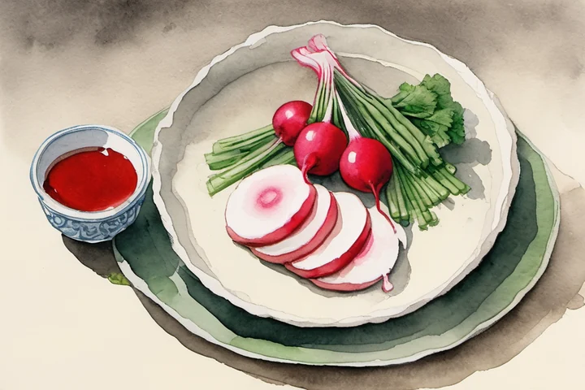
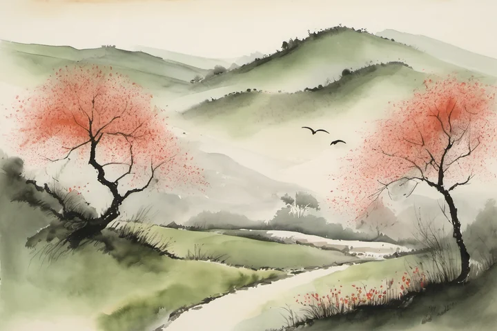
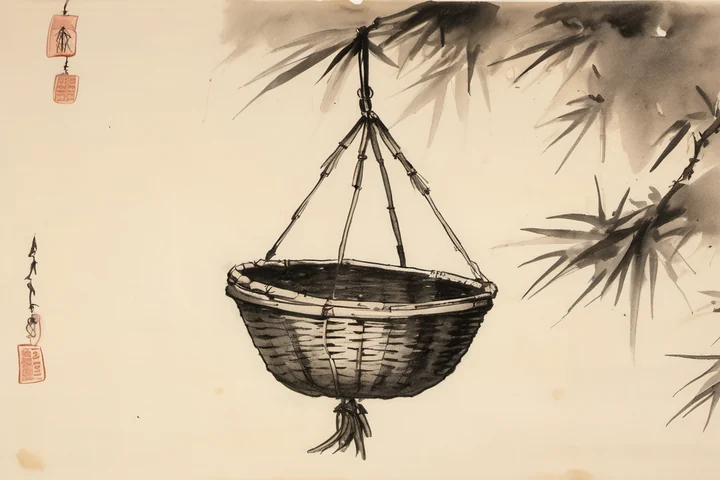
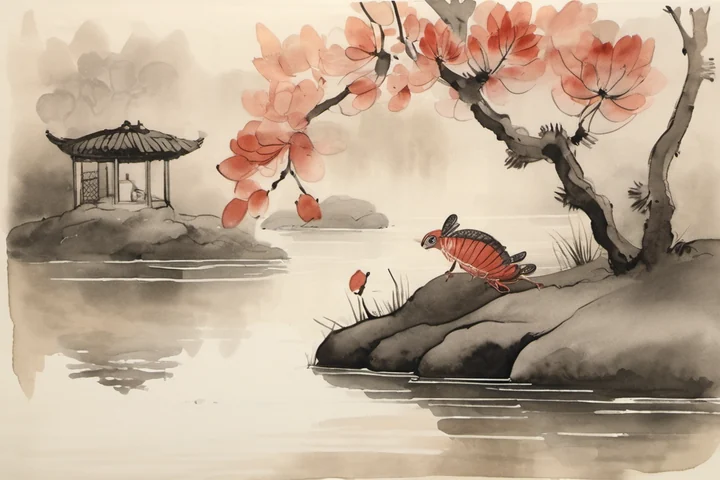
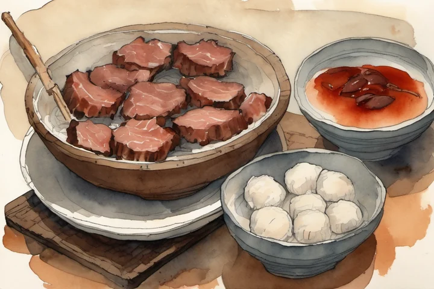
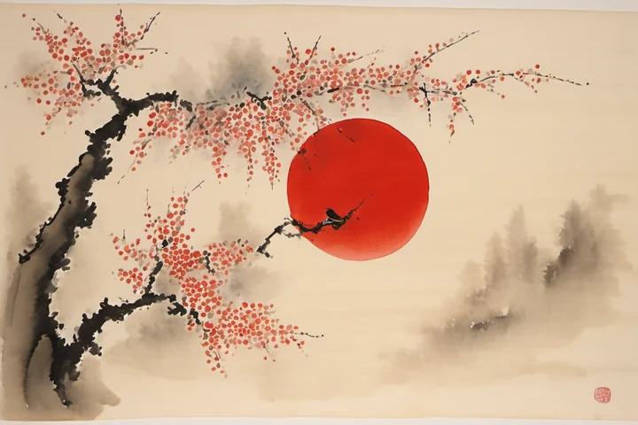

立春 · 春
咬春
“咬得草根断，则百事可做。”立春这天，人们吃春饼、春卷、萝卜，叫作“咬春”。 薄薄一张饼，卷上豆芽、韭菜、鸡蛋，一口咬下去，咬住的是新一年的好彩头。

民俗
节气不只是天气，更是生活。古人把每一个节气都过出了滋味—— 有些习俗流传至今，成了我们和季节打招呼的方式。
立春 · 春
“咬得草根断，则百事可做。”立春这天，人们吃春饼、春卷、萝卜，叫作“咬春”。 薄薄一张饼，卷上豆芽、韭菜、鸡蛋，一口咬下去，咬住的是新一年的好彩头。

清明 · 春
清明既是节气，也是节日。扫墓祭祖之后，人们踏青、放风筝、荡秋千， 在春光里把思念和希望一起放飞。风一吹，纸鸢飞得老高，心情也跟着亮堂起来。

立夏 · 夏
立夏称体重，是江南的老习俗。司秤人一面打秤花，一面说吉利话： “秤花八十七，活到九十一。”祈愿一夏无病、身体康健。称的不只是分量，还有一整年的安心。

夏至 · 夏
夏至前后，扇子、凉席、绿豆汤齐齐上阵。古人还会互赠折扇， 扇走暑气，也扇来情谊。傍晚搬一把竹椅坐在巷口，摇着蒲扇听蝉鸣，就是最好的消夏。

立秋 · 秋
夏天苦夏掉的分量，秋天要补回来。炖肉、烤肉、红烧肉轮番上桌—— “贴秋膘”是给自己名正言顺加餐的理由。当然，如今更讲究均衡饮食，贴膘也要贴得健康。

冬至 · 冬
冬至起进入“数九寒天”。古人画“九九消寒图”，每天染一瓣梅花， 八十一瓣染完，春天就来了。把漫长的冬天拆成八十一个小格子，日子忽然就有了盼头。
